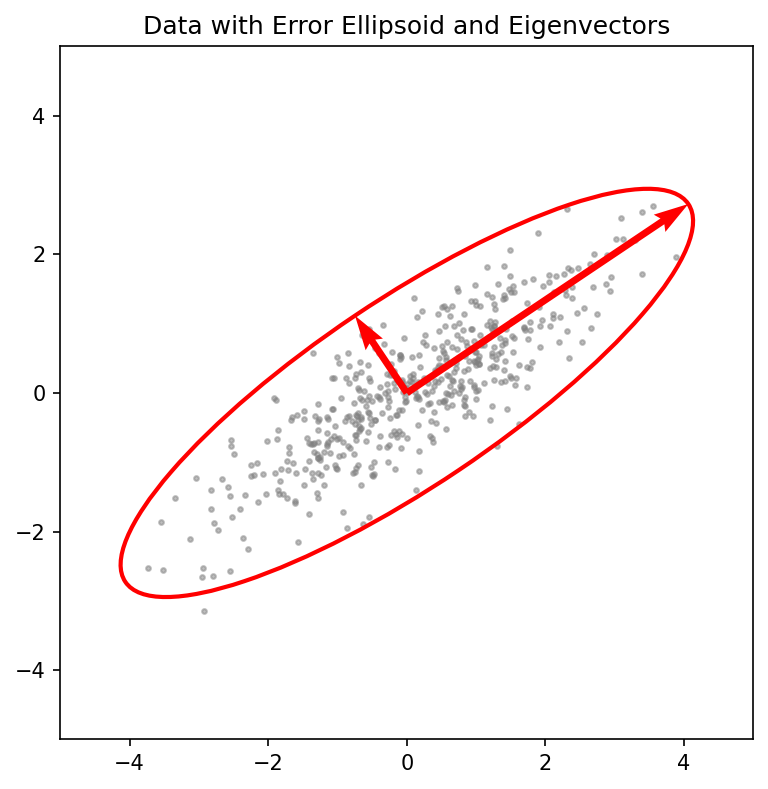

graph LR
X[X] --> Eq[=]
Eq --> U[U]
U --> Sigma[Σ]
Sigma --> VT[V^T]
subgraph Dimensions
X---D1[N x D]
U---D2[N x N]
Sigma---D3[N x D]
VT---D4[D x D]
endMathematical Foundations of AI & ML
Unit 2: Linear Algebra for Machine Learning
01. Title: Linear Algebra for ML
- The Geometry of Intelligence: In this unit, we move from scalar arithmetic to the geometric world of vectors and matrices.
- Dependency Role: Linear Algebra (LA) is the bedrock for PCA, SVD, Linear Regression, and Neural Networks.
- Goal: Develop an intuitive understanding of high-dimensional spaces and transformations.
02. Unit 2 learning outcomes
By the end of this lecture, you will be able to: - Interpret matrices as linear operators that transform space. - Derive PCA as a variance-maximization problem using eigendecomposition. - Apply SVD for low-rank approximation and denoising of materials data. - Assess conditioning and numerical stability in linear systems.
03. Why LA still matters in modern ML
- High-Dimensional Manifolds: Data doesn’t just “sit” in a table; it lives on non-linear manifolds in high-dim space (Sandfeld et al. 2024).
- Parallelism: Modern GPUs are optimized for matrix-vector products (\(\mathbf{y} = \mathbf{W}\mathbf{x} + \mathbf{b}\)).
- Compactness: A million parameters in a Deep Net are just a series of matrix operations.
04. Notation contract for the semester
- Scalars: \(a, b, c\) (italic lowercase).
- Vectors: \(\mathbf{x}, \mathbf{y}, \mathbf{w}\) (bold lowercase). Assumed to be column vectors.
- Matrices: \(\mathbf{A}, \mathbf{X}, \mathbf{W}\) (bold uppercase).
- Transposition: \(\mathbf{x}^T\) turns a column into a row.
- Inner Product: \(\langle \mathbf{x}, \mathbf{y} \rangle = \mathbf{x}^T \mathbf{y} = \sum x_i y_i\).
05. Scalars, vectors, matrices refresher
- Vector: A point in \(D\)-dimensional space \(\mathbb{R}^D\).
- Matrix: A collection of \(N\) vectors of dimension \(D\), written as an \(N \times D\) data matrix \(\mathbf{X}\).
- Tensors: Generalization to more than 2 dimensions (e.g., RGB images are \(H \times W \times 3\)).
06. Vector spaces and subspaces
- Vector Space: A set of vectors that is closed under addition and scalar multiplication.
- Subspace: A “flat” region within a larger space (e.g., a plane in 3D).
- In ML: We often look for a low-dimensional subspace that contains most of the data’s information.
07. Basis and change of basis
- Basis: A set of linearly independent vectors that span the space.
- Standard Basis: \(\mathbf{e}_1 = [1, 0, \dots]^T, \mathbf{e}_2 = [0, 1, \dots]^T\).
- Change of Basis: Re-representing a vector in a new coordinate system.
Geometric Plot

08. Linear combinations and span
- Linear Combination: \(\mathbf{v} = \sum \alpha_i \mathbf{b}_i\).
- Span: The set of all possible linear combinations of a set of vectors.
- Expressivity: A model’s ability to represent different data depends on the span of its basis functions.
09. Linear maps as operators
- A matrix \(\mathbf{A}\) defines a mapping \(f(\mathbf{x}) = \mathbf{Ax}\).
- Geometric View: Matrices can rotate, scale, and shear space.
- Composition: \(f(g(\mathbf{x})) = \mathbf{A}(\mathbf{Bx}) = (\mathbf{AB})\mathbf{x}\). This is why matrix multiplication order matters.
10. Column space and row space
- Column Space \(C(\mathbf{A})\): The span of the columns. All possible outputs \(\mathbf{y} = \mathbf{Ax}\).
- Row Space: The span of the rows.
- In ML: If your target \(\mathbf{y}\) is not in \(C(\mathbf{X})\), your linear model will have non-zero residual error.
11. Nullspace and identifiability
- Nullspace \(N(\mathbf{A})\): The set of all \(\mathbf{x}\) such that \(\mathbf{Ax} = \mathbf{0}\).
- Identifiability: If \(N(\mathbf{X})\) is non-trivial, multiple parameter sets \(\mathbf{w}\) can produce the same predictions (over-parameterization).
12. Rank and model capacity intuition
- Rank: The number of linearly independent columns (or rows).
- Full Rank: Maximum possible rank for a matrix’s dimensions.
- Capacity: Rank measures the “true” dimensionality of the transformation. Low-rank matrices compress information.
13. Inner products and similarity
- \(\langle \mathbf{x}, \mathbf{y} \rangle = \|\mathbf{x}\| \|\mathbf{y}\| \cos(\theta)\).
- Cosine Similarity: Measures the alignment of two vectors, independent of their magnitude.
- Orthogonality: \(\langle \mathbf{x}, \mathbf{y} \rangle = 0\). Vectors are at 90 degrees.
14. Norms (L1/L2/Frobenius)
- L2 Norm: \(\|\mathbf{x}\|_2 = \sqrt{\sum x_i^2}\) (Euclidean distance).
- L1 Norm: \(\|\mathbf{x}\|_1 = \sum |x_i|\) (Manhattan distance, promotes sparsity).
- Frobenius Norm: \(\|\mathbf{A}\|_F = \sqrt{\sum \sum A_{ij}^2}\) (Size of a matrix).
15. Distance metrics and data geometry
- Euclidean distance is the default, but it can be misleading in high dimensions (Curse of Dimensionality).
- Mahalanobis Distance: Scales distances by the inverse covariance, accounting for correlations and feature variances (Murphy 2012).
16. Orthogonality and orthonormal bases
- Orthonormal Basis: \(\langle \mathbf{u}_i, \mathbf{u}_j \rangle = \delta_{ij}\) (All vectors unit length and mutually perpendicular).
- Numerical Advantage: Calculating coefficients is just an inner product: \(\alpha_i = \langle \mathbf{v}, \mathbf{u}_i \rangle\).
- Stability: Orthonormal matrices \(\mathbf{Q}\) preserve norms: \(\|\mathbf{Qx}\| = \|\mathbf{x}\|\).
17. Projection onto subspaces
Mathematical View
- Goal: Find the point \(\hat{\mathbf{y}}\) in subspace \(S\) that is closest to a given \(\mathbf{y}\).
- Formula: For a column space spanned by \(\mathbf{X}\): \[\hat{\mathbf{y}} = \mathbf{X}(\mathbf{X}^T\mathbf{X})^{-1}\mathbf{X}^T\mathbf{y}\]
- Projection Matrix: \(\mathbf{P} = \mathbf{X}(\mathbf{X}^T\mathbf{X})^{-1}\mathbf{X}^T\)
Geometric Intuition
- Orthogonality Principle: The error vector \(\mathbf{e} = \mathbf{y} - \hat{\mathbf{y}}\) must be perpendicular to every vector in \(S\).
- \(\mathbf{X}^T(\mathbf{y} - \mathbf{X}\hat{\mathbf{w}}) = \mathbf{0}\).
- Visual: “Dropping a shadow” onto the floor.
18. Projection matrix properties
- \(\mathbf{P} = \mathbf{X}(\mathbf{X}^T\mathbf{X})^{-1}\mathbf{X}^T\)
- Idempotence: \(\mathbf{P}^2 = \mathbf{P}\). Projecting twice doesn’t change anything.
- Symmetry: \(\mathbf{P}^T = \mathbf{P}\).
- Interpretation: \(\mathbf{P}\) acts as a “filter” that keeps only the component of \(\mathbf{y}\) aligned with \(\mathbf{X}\).
19. Least squares as projection
- Linear Regression: \(\mathbf{y} \approx \mathbf{Xw}\).
- We want \(\mathbf{Xw}\) to be the projection of \(\mathbf{y}\) onto the column space of \(\mathbf{X}\).
- This geometric view leads directly to the Normal Equations.
20. Normal equations derivation
- Residual error: \(\mathbf{r} = \mathbf{y} - \mathbf{Xw}\)
- Orthogonality: \(\mathbf{X}^T \mathbf{r} = \mathbf{0}\) (Error must be orthogonal to feature span)
- Substitute: \(\mathbf{X}^T (\mathbf{y} - \mathbf{Xw}) = \mathbf{0}\)
- Expand & Rearrange: \(\mathbf{X}^T \mathbf{Xw} = \mathbf{X}^T \mathbf{y}\)
- Solve: \(\hat{\mathbf{w}} = (\mathbf{X}^T\mathbf{X})^{-1}\mathbf{X}^T\mathbf{y}\) (Bishop 2006)
21. Condition number intuition
- Condition Number \(\kappa(\mathbf{A})\): Measures how much the output \(\mathbf{y}\) can change for a small change in input \(\mathbf{x}\).
- Ratio of largest to smallest singular values: \(\kappa = \sigma_{max} / \sigma_{min}\).
- Well-conditioned: \(\kappa \approx 1\). Ill-conditioned: \(\kappa \gg 1\).
22. Ill-conditioning in practice
- Causes: Multicollinearity (features are nearly linear combinations of each other).
- Effect: Small noise in \(\mathbf{y}\) leads to massive, unstable swings in \(\hat{\mathbf{w}}\).
- Visual: The loss landscape becomes a very narrow, elongated valley.
23. Numerical stability and scaling
- Standardization: Subtracting mean and dividing by std-dev helps equalize eigenvalues.
- Numerical Trick: Never invert \((\mathbf{X}^T\mathbf{X})\) directly. Use QR decomposition or SVD for more stable solutions.
24. Eigenvalues/eigenvectors recap
- \(\mathbf{Ax} = \lambda \mathbf{x}\).
- Intuition: Eigenvectors are the “characteristic directions” of a matrix where the transformation is just a simple scaling by \(\lambda\).
- Spectral Radius: The largest absolute eigenvalue, determining the stability of iterative maps.
25. Spectral decomposition intuition
- For a symmetric matrix \(\mathbf{S}\): \(\mathbf{S} = \mathbf{U \Lambda U}^T\).
- Geometric View: A symmetric matrix is just a rotation to the eigenbasis, a scaling along those axes, and a rotation back.
- Decomposition: \(\mathbf{S} = \sum \lambda_i \mathbf{u}_i \mathbf{u}_i^T\).
26. Positive semidefinite matrices
- \(\mathbf{x}^T \mathbf{Ax} \ge 0\) for all \(\mathbf{x}\).
- Eigenvalues: All \(\lambda_i \ge 0\).
- Covariance Matrices are always PSD. This ensures that “variance” can never be negative.
27. Covariance matrix geometry
- Data Matrix \(\mathbf{X}\) (centered): \(\mathbf{S} = \frac{1}{N-1}\mathbf{X}^T\mathbf{X}\).
- The surface \(\mathbf{x}^T \mathbf{S}^{-1} \mathbf{x} = 1\) defines an Error Ellipsoid.
- The axes are the eigenvectors of \(\mathbf{S}\), with lengths proportional to \(\sqrt{\lambda_i}\).
Geometric Plot

28. PCA as variance maximization
- PCA seeks directions \(\mathbf{u}\) that maximize the variance of the projected data: \(J = \mathbf{u}^T \mathbf{Su}\).
- Subject to \(\|\mathbf{u}\|=1\), the Lagrangian is \(L = \mathbf{u}^T \mathbf{Su} - \lambda(\mathbf{u}^T\mathbf{u} - 1)\).
- Stationary point: \(\mathbf{Su} = \lambda \mathbf{u}\).
- The best direction is the eigenvector with the largest eigenvalue.
29. SVD overview
- Any \(N \times D\) matrix \(\mathbf{X}\) can be decomposed as: \(\mathbf{X} = \mathbf{U \Sigma V}^T\).
- \(\mathbf{U}\): Left singular vectors (eigenvectors of \(\mathbf{XX}^T\)).
- \(\mathbf{V}\): Right singular vectors (eigenvectors of \(\mathbf{X}^T\mathbf{X}\) - the Principal Components).
- \(\mathbf{\Sigma}\): Diagonal matrix of singular values \(\sigma_i = \sqrt{\lambda_i}\).
30. SVD and low-rank approximation
- Compression: By keeping only the top \(k\) singular values, we get the best rank-\(k\) approximation \(\mathbf{X}_k\).
- Denoising: Small singular values often correspond to noise. Throwing them away cleans the signal.
- Application: Background subtraction in videos or extracting latent patterns in spectroscopy.
31. Eckart–Young idea (conceptual)
- The matrix \(\mathbf{X}_k\) obtained by SVD is the solution to: \[ \min_{\mathbf{A}: \text{rank}(\mathbf{A})=k} \|\mathbf{X} - \mathbf{A}\|_F \]
- This means SVD gives the mathematically optimal compression in terms of squared error.
32. Pseudo-inverse and solvability
- Moore-Penrose Pseudo-inverse: \(\mathbf{X}^\dagger = \mathbf{V \Sigma}^\dagger \mathbf{U}^T\).
- Works even if \(\mathbf{X}^T\mathbf{X}\) is not invertible.
- Provides the minimum norm solution to underdetermined systems.
33. Linear regression matrix form
- Model: \(\mathbf{y} = \mathbf{Xw} + \boldsymbol{\epsilon}\).
- We assume \(\boldsymbol{\epsilon} \sim \mathcal{N}(\mathbf{0}, \sigma^2 \mathbf{I})\).
- Maximum Likelihood leads to the same Normal Equations derived from geometry.
34. Regularization in matrix language
- Ridge Regression: \(\hat{\mathbf{w}}_{ridge} = (\mathbf{X}^T\mathbf{X} + \lambda \mathbf{I})^{-1}\mathbf{X}^T\mathbf{y}\).
- Spectral View: Adding \(\lambda \mathbf{I}\) shifts all eigenvalues of \(\mathbf{X}^T\mathbf{X}\) by \(+\lambda\), ensuring invertibility and suppressing high-variance (noisy) directions.
35. L1 vs L2 geometric intuition
- L2 (Ridge): Constraint is a hypersphere. The solution moves smoothly toward the origin.
- L1 (Lasso): Constraint is a hyper-diamond. The solution is likely to hit a “corner,” setting some weights to exactly zero (Feature Selection).
36. Feature correlation and multicollinearity
- If two features are perfectly correlated, \(\mathbf{X}^T\mathbf{X}\) is singular (rank deficient).
- If highly correlated, eigenvalues are near zero, and \((\mathbf{X}^T\mathbf{X})^{-1}\) explodes.
- Solution: PCA preprocessing or Ridge regularization.
37. Whitening/standardization rationale
- Whitening: Transform data so \(\mathbf{S} = \mathbf{I}\).
- Formula: \(\mathbf{X}_{white} = \mathbf{X} \mathbf{V \Lambda}^{-1/2} \mathbf{V}^T\).
- This removes all correlations and gives every direction equal variance, which is crucial for some algorithms like Independent Component Analysis (ICA).
38. Gram matrix interpretation
- Gram Matrix \(\mathbf{K} = \mathbf{XX}^T\).
- \(K_{ij} = \langle \mathbf{x}_i, \mathbf{x}_j \rangle\). It stores all pairwise similarities between samples.
- Size: \(N \times N\). If \(N \ll D\), it’s more efficient to work with \(\mathbf{K}\) than \(\mathbf{X}\).
39. Kernel hint from inner products
- Many ML algorithms only depend on the data through inner products \(\langle \mathbf{x}_i, \mathbf{x}_j \rangle\).
- Kernel Trick: Replace \(\langle \mathbf{x}_i, \mathbf{x}_j \rangle\) with a non-linear function \(k(\mathbf{x}_i, \mathbf{x}_j)\) that computes an inner product in a much higher-dimensional feature space.
40. From LA to optimization bridge
- We’ve seen that solving \(\mathbf{Ax}=\mathbf{b}\) is equivalent to minimizing \(J(\mathbf{x}) = \frac{1}{2}\mathbf{x}^T\mathbf{Ax} - \mathbf{b}^T\mathbf{x}\).
- LA gives us the analytical solutions; Unit 3 will show how to find these solutions iteratively when matrices are too big to fit in memory.
41. Materials example: process matrix \(\mathbf{X}\)
- Rows: Individual batches or experiments.
- Columns: Sensor readings, alloy compositions, temperature setpoints.
- Goal: Find the subspace of “stable processing” that ignores sensor noise.
42. Materials example: image embeddings
- A \(1024 \times 1024\) TEM image is a vector in \(\mathbb{R}^{1,048,576}\).
- Dimensionality Reduction: We use PCA to find the 50 “eigen-microstructures” that describe 90% of the morphological variance (McClarren 2021).
43. Materials example: spectra basis
- X-ray Diffraction (XRD): Each scan is a vector.
- Basis Functions: Pure phases (e.g., Austenite, Martensite) act as a basis.
- Task: Decompose a mixed spectrum into a linear combination of pure phase bases.
44. Common pitfalls checklist
45. Mini quiz slide
- If \(\mathbf{A}\) has rank \(k\), how many non-zero singular values does it have?
- \(k\)
- \(N\)
- \(D\)
- \(1\)
- As the regularization parameter \(\lambda \to \infty\) in Ridge regression, the weights \(\hat{\mathbf{w}}\):
- Approach the OLS solution
- Approach \(\mathbf{0}\)
- Approach \(\infty\)
- Become sparse (exactly zero)
- Can standard PCA find a non-linear circular pattern in 2D?
- Yes, it identifies the radius
- No, it only finds linear orthogonal directions of max variance
- Yes, if we use enough components
- Only if the data is centered
46. Lecture vs exercise split
- Lecture: Understanding the “Why” (geometry, optimality of SVD, variance maximization).
- Exercise: Mastering the “How” (Efficient NumPy implementation, visualization of components, reconstruction).
47. Exercise task 1 scaffold: Projection
- Generate a 3D cloud of points.
- Project them onto a 2D plane manually using a projection matrix.
- Visualize the “shadow” of the data.
48. Exercise task 2 scaffold: SVD
- Load a noisy materials image.
- Perform SVD.
- Plot singular values (Scree plot).
- Reconstruct the image using \(k=5, 20, 100\) components and observe denoising.
49. Exercise task 3 scaffold: Least Squares
- Fit a line to noisy experimental data.
- Introduce a redundant, correlated feature.
- Observe the weight instability.
- Fix it using Ridge regression.
50. Summary + references + next unit link
- Key Takeaway: Matrices are transformations; SVD is the ultimate tool for understanding them.
- Next Unit: Optimization and Calculus - moving from static solutions to dynamic learning.
- Read: Neuer Ch. 2.1-2.3, Bishop Ch. 2.1.
Bishop, Christopher M. 2006. Pattern Recognition and Machine Learning. Springer.
McClarren, Ryan G. 2021. Machine Learning for Engineers: Using Data to Solve Problems for Physical Systems. Springer.
Murphy, Kevin P. 2012. Machine Learning: A Probabilistic Perspective. MIT Press.
Sandfeld, Stefan et al. 2024. Materials Data Science. Springer.